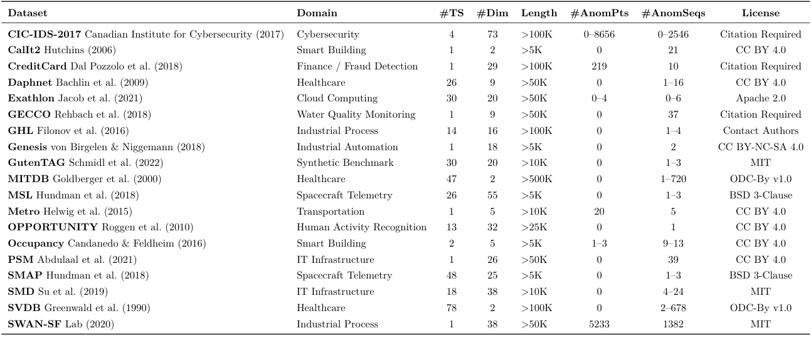
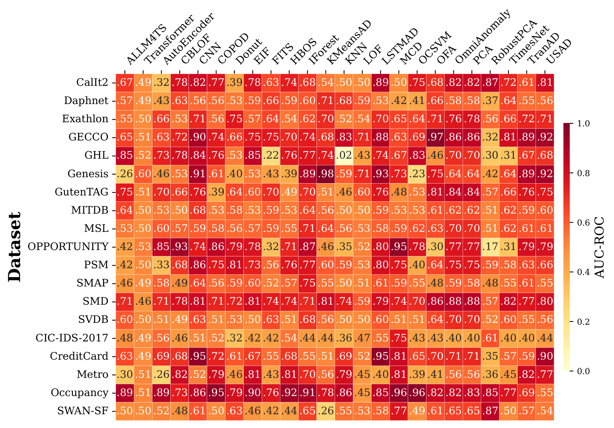
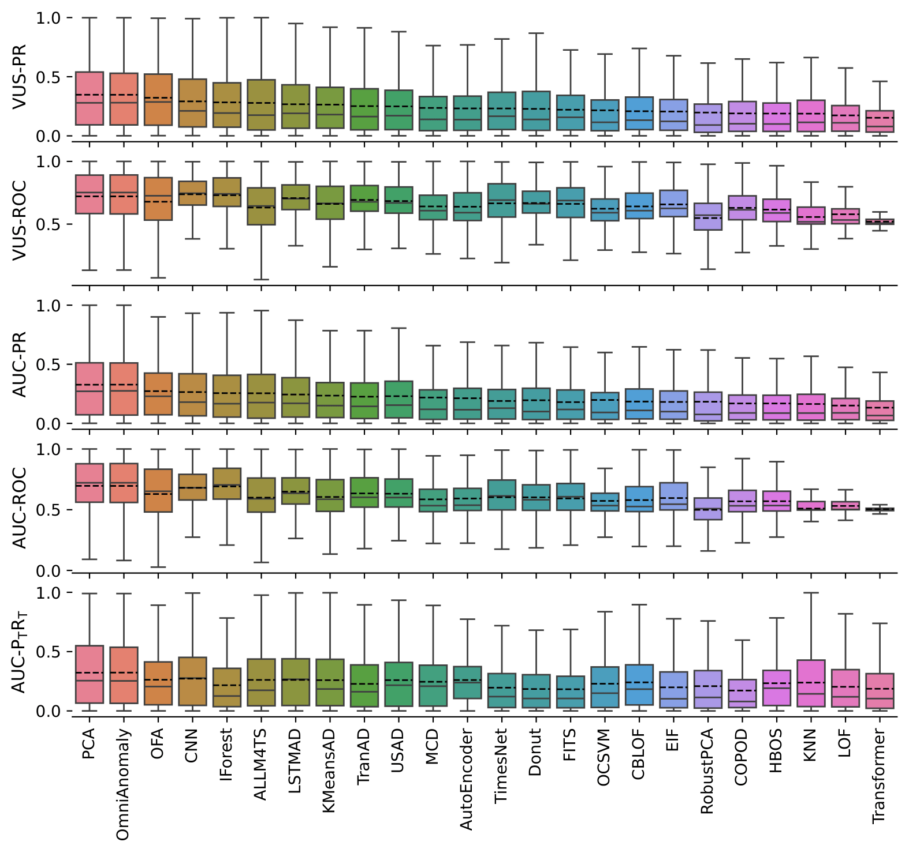
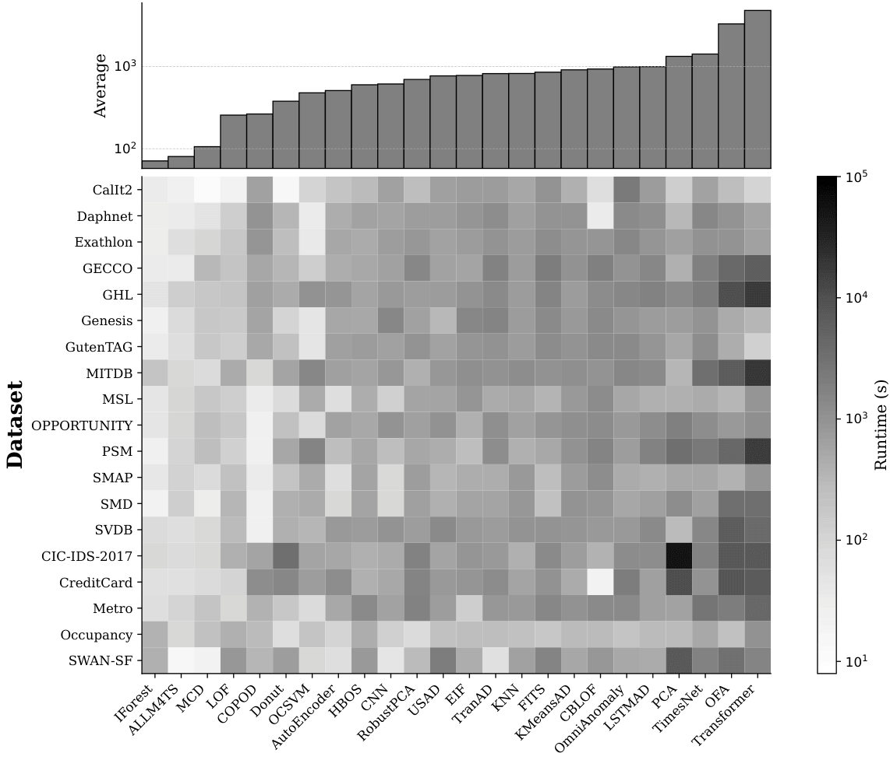
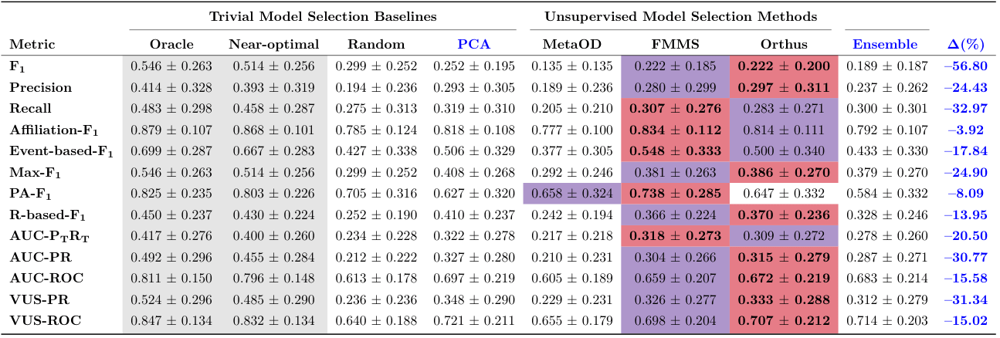
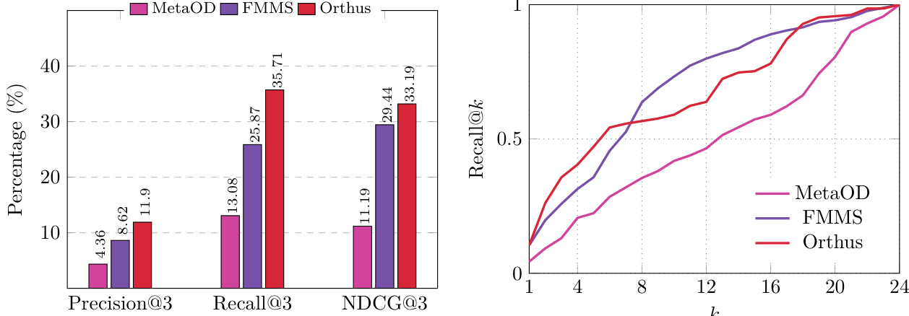

💡 Contributions
- We introduce mTSBench, the largest and most comprehensive MTS-AD and model selection benchmark to date, featuring 344 multivariate time series from 19 datasets across 12 application domains. mTSBench systematically evaluates 24 anomaly detectors, including the only LLM-based methods for MTS-AD, reflecting their performance in multivariate settings with real-world temporal dependencies and cross-signal interactions.
- Our empirical analysis reveals that, among the evaluated methods, no single anomaly detection method performs consistently well across datasets in mTSBench, underscoring the need for adaptive selection strategies. To this end, mTSBench is the first to integrate unsupervised model selection methods and benchmark their effectiveness across diverse time series contexts and under consistent settings.
- To drive reproducible comparisons, mTSBench introduces a unified evaluation suite with point-based and ranking-based metrics for anomaly detection and model selection. Using this standardized setup, we observe substantial gaps between the evaluated unsupervised model selection methods and both optimal and trivial baselines. These results highlight limitations of current unsupervised selection strategies and underscore the need for more adaptive model selection mechanisms.
Datasets in mTSBench

mTSBench contains 344 multivariate time series from 19 datasets, covering a range of domains, anomaly types, and time series characteristics to ensure a diverse and representative benchmark
📊 Detectors Performance

Average AUC-ROC Performance of 24 Anomaly Detection Methods (x-axis) Evaluated Across 19 mTSBench Datasets (y-axis). The substantial performance variability across datasets highlights the need for robust model selection strategies. mTSBench benchmarks the capabilityof model selection techniques to systematically identify the optimal anomaly detection method among 24 state-of-the-art detectors evaluated on a comprehensive collection of 344 multivariate time series.

Boxplots summarize the performance of anomaly detection methods across all mTSBench datasets using five evaluation metrics: VUS-PR, VUS-ROC, AUC-PR, AUC-ROC, and AUC-PTRT. Methods are ordered by their average VUS-PR score. Boxes indicate interquartile ranges, with the solid line denoting the median and the dashed line denoting the mean. There is clear performance stratification among anomaly detectors across the five evaluation metrics. PCA, OmniAnomaly, and OFA achieve higher median scores, particularly on VUS-PR, VUS-ROC, and AUC-ROC, while methods such as KNN, Transformer, LOF, and HBOS consistently occupy the lower end of the performance spectrum, with poor AUC-PR and AUC-PTRT indicating difficulty handling highly imbalanced and threshold-sensitive anomaly detection settings.

The top panel reports the average runtime of each anomaly detection method evaluated on 344 multivariate time series in mTSBench. Among the 24 methods, IForest is the most efficient, followed by ALLM4TS and MCD, while AnomalyTransformer has the highest computational cost and OFA is the second most expensive. The bottom panel presents a heatmap showing the mean runtime of all detectors across the 19 datasets.
Selectors in mTSBench
MetaOD estimates how well different anomaly detectors will perform on a new dataset by learning from their past performance on known datasets. It summarizes each dataset using meta-features and maps both datasets and detectors into a shared latent space, allowing it to recommend the detector with the highest estimated performance.
FMMS predicts detector performance by modeling interactions between dataset meta-features and historical performance scores. It uses these feature interactions to estimate how each detector is expected to perform on a new dataset and selects the detector with the highest predicted score.
Orthus characterizes time series using a collection of univariate meta-features and distinguishes whether a new dataset is similar to or different from previously seen data. Based on this distinction, it applies regression models learned from historical performance to estimate detector performance and select the most suitable detector.
📊 Selectors Performance


Ranking Comparison of Model Selection Methods. (Left) Precision@3, Recall@3, and NDCG@3 for each method. (Right) Recall@k as a function of k. In the Top-3 setting (left), Orthus achieves the highest scores across all ranking metrics, followed by FMMS and then MetaOD, while the Recall@k curves (right) show that Orthus and FMMS alternate in ranking quality across different values of k, with MetaOD consistently performing worse.
BibTeX
@article{zhou2026mTSBench,
title={mTSBench: Benchmarking Multivariate Time Series Anomaly Detection and Model Selection at Scale},
author={Zhou, Xiaona and Brif, Constantin and Lourentzou, Ismini},
journal={Transactions on Machine Learning Research (TMLR)},
year={2026}
}